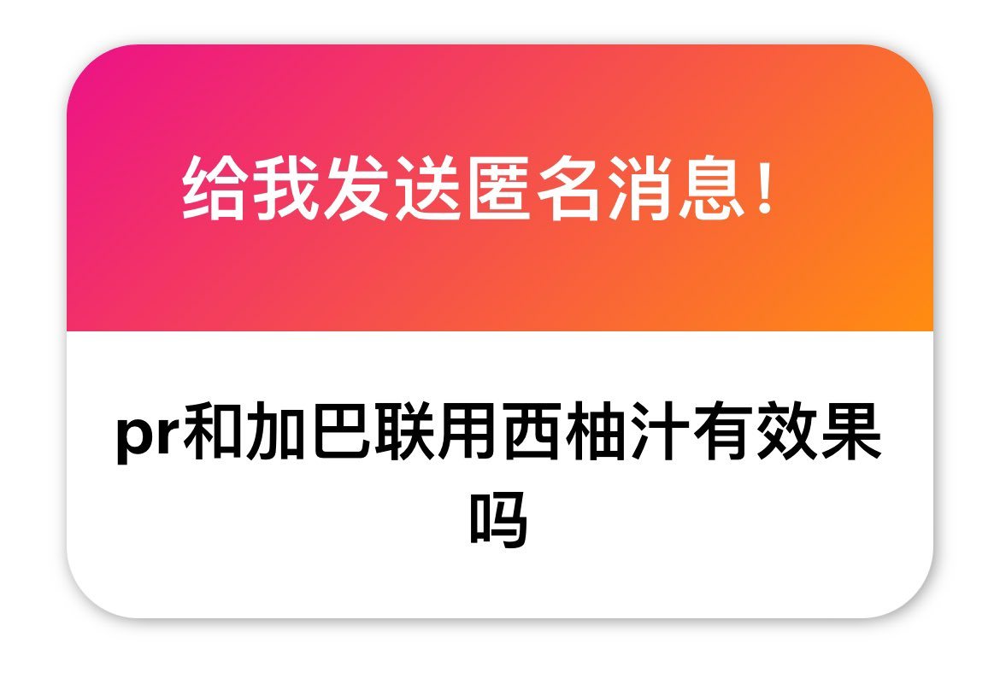

*⁂汐渋鈴蘭⁂*.･ﾟﾟ
@SupernovaLLan
@FREUNDIS4021 嗯啊那和普瑞体感差别也不大（？）

我是废物
@FREUNDIS4021
p1没有哦。一般用愈美片配西柚汁是因为DXM部分经CYP3A4代谢。西柚汁抑制肠道CYP3A4，减少首过代谢，提高DXM的生物利用度和血浆浓度，从而增强娱乐效果，但pr和加巴的吸收不依赖CYP3A4或P-gp等被西柚汁显著影响的途径
p2THC的话晕晕的，轻飘飘的，全身放松（CBD倒没有那么强high感了 https://t.co/zqQBPj7JaB